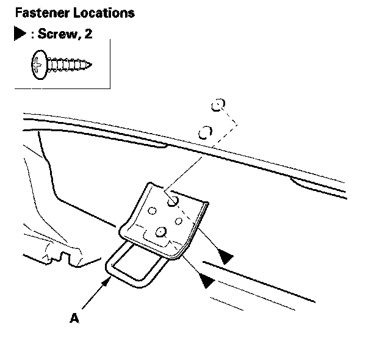

Glove Box Striker Replacement
Glove Box Striker ReplacementSRS components are located in this area. Review the SRS component locations, precautions and procedures before doing repairs or service.
NOTE: Take care not to scratch the dashboard and related parts.
1. While holding the glove box, release the glove box stop on each side from the dashboard by pushing them inside.

2. Remove the screws, then remove the glove box striker (A).
3. Install the striker in the reverse order of removal